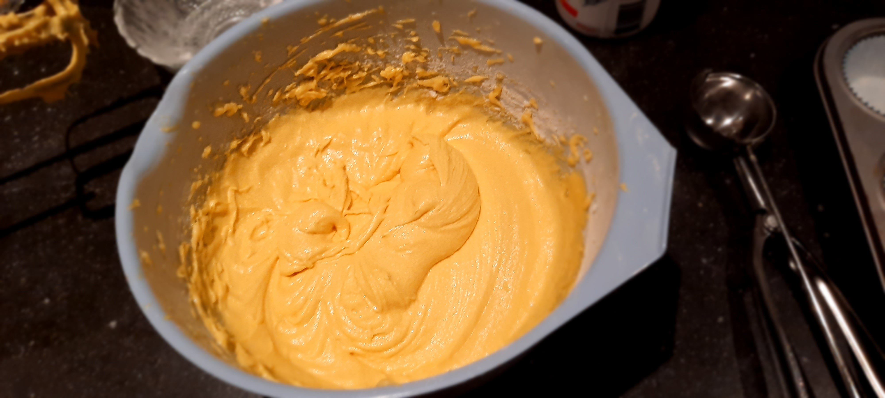
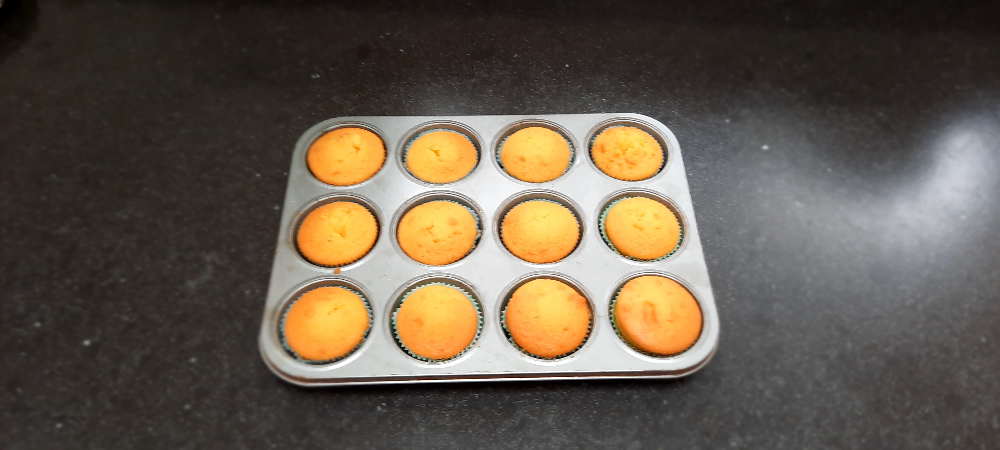
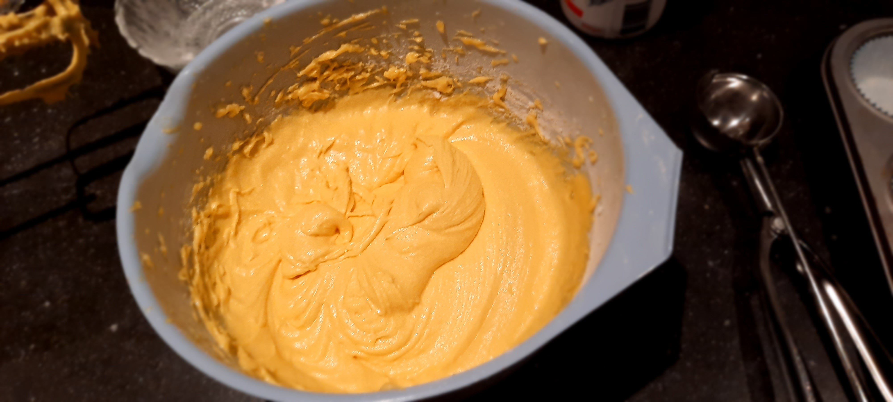
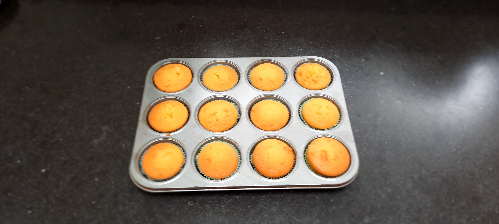

Als je voor ongezouten roomboter kiest raad ik je aan om er nog een snufje zout bij te doen. Verder is het handig om een cupcake bakvorm te hebben. Deze heb je niet perse nodig om cupcakes te maken, maar het houdt de cupcakes beter in zijn originele vorm tijdens het bakken. Als je geen bakvorm hebt kun je ze gewoon op de bakplaat neerzetten in de papieren vormpjes.
Je zou eventueel nog decoraties aan de cupcakes toe kunnen voegen. Dit kan met behulp van glazuur en decoratiespikkels. Glazuur kun je maken met poedersuiker en een heel klein beetje water. Hoe minder water, hoe dikker het glazuur is. Je zou het glazuur ook nog een kleurtje kunnen geven door middel van eetbare kleurstof. Verder zou je ook fondant kunnen gebruiken om de cupcakes te versieren. Het is handig om onder de fondant een laagje glazuur te doen, zodat deze goed vast blijft zitten.
 


